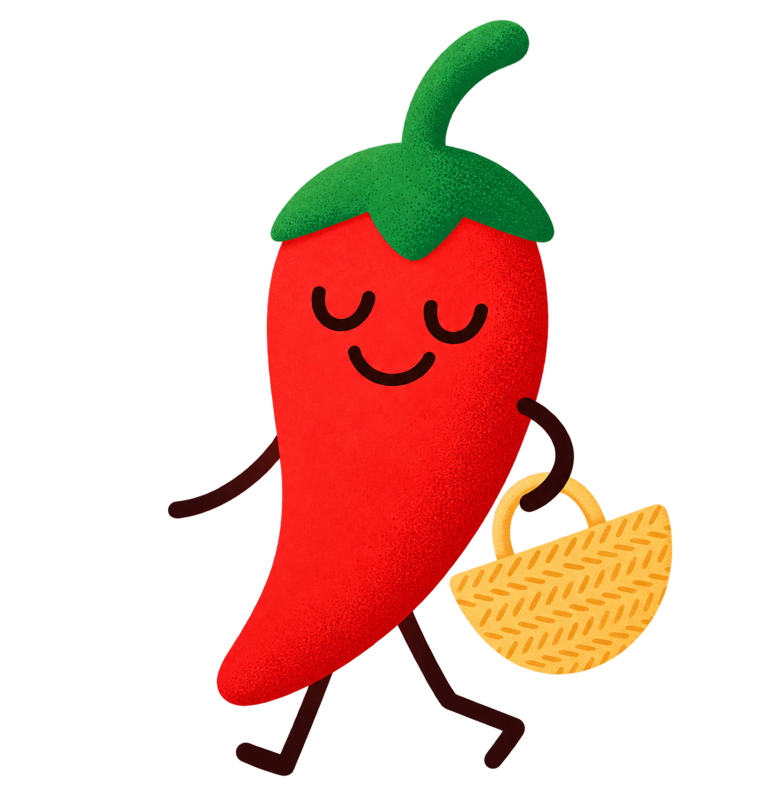

Visez le code-barres
Cela marche en magasin, même hors connexion. Les marques tunisiennes sont couvertes.

Eatsmart TéléchargerUn scan tout simple, une note sur 100 et des mots rassurants. Eatsmart vous aide à choisir ce qui fait du bien, sans culpabiliser.
Simple et bon pour vous.
Correct, avec quelques réserves.
De temps en temps, c'est très bien.
Trop de sucre, sel ou additifs.
Cela marche en magasin, même hors connexion. Les marques tunisiennes sont couvertes.
Nutriments, additifs, transformation : chaque point expliqué avec bienveillance, sans sermon.
Des alternatives mieux notées, près de chez vous, du petit commerce au supermarché.